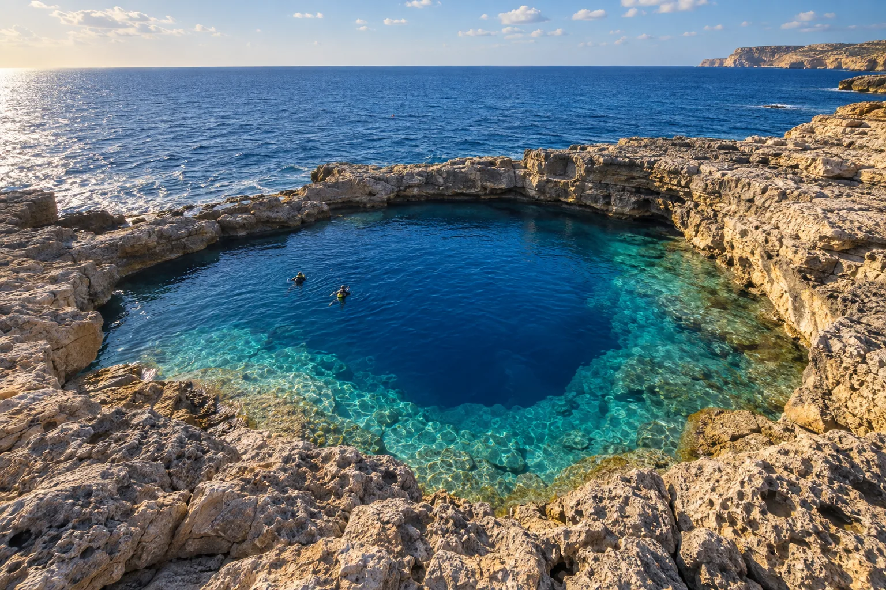

Blue Hole de Gozo
Gozo, Malte · plongée, snorkeling

Cheminée naturelle dans la roche qui débouche sur le grand bleu, près de l’ancienne Azure Window. L’un des sites de plongée les plus connus de Méditerranée.
- Lieu
- Gozo, Malte
- Niveau
- Intermédiaire
- Activités
- plongée, snorkeling
- Type d'eau
- Mer / océan
- Coordonnées
- 36.05, 14.19 (position approximative du secteur)
Dangers à connaître
- Entrée dangereuse par mer agitée.
- Profondeur qui descend vite.
Le conseil d'Ocean Buddy
Plonge avec un centre local : l’entrée et la sortie dépendent de l’état de la mer.
Ouvrir dans Ocean Buddy Télécharger sur l'App Store
Source : Fiche Ocean Buddy · septembre 2026 · à vérifier localement.